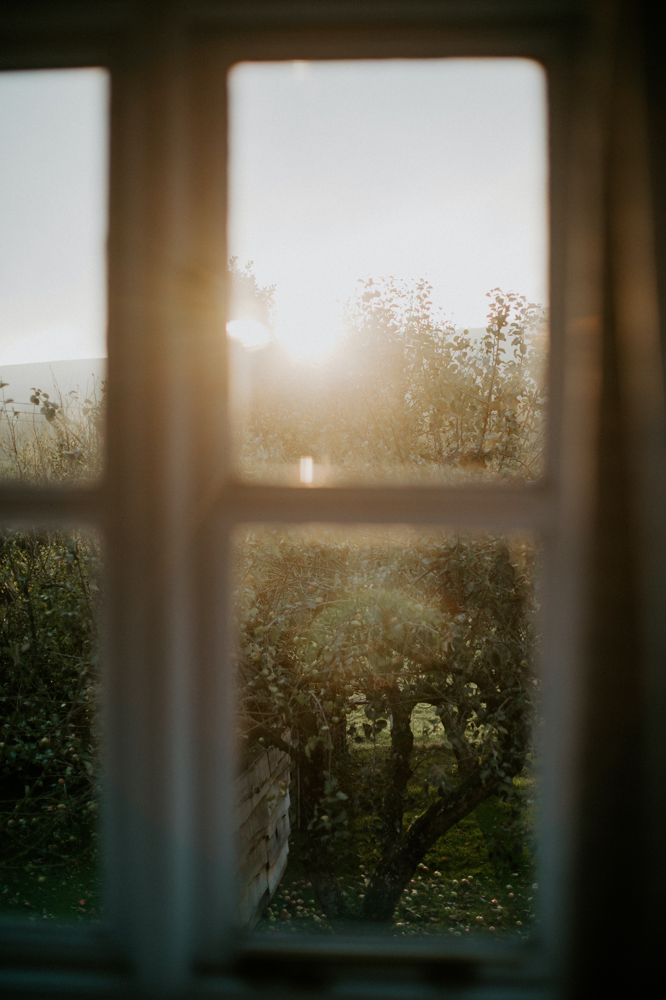
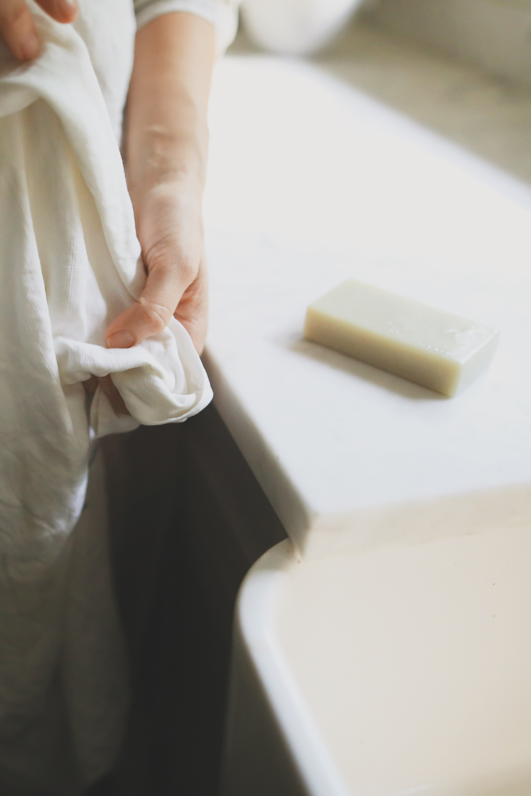

We are two friends and mothers in the Cowichan Valley who value the art of slow, traditional soapmaking
A Message From the Makers

We believe in the potency of thoughtfully made, plant-powered soaps and body care that heighten your senses and help you melt into relaxation and refreshment
